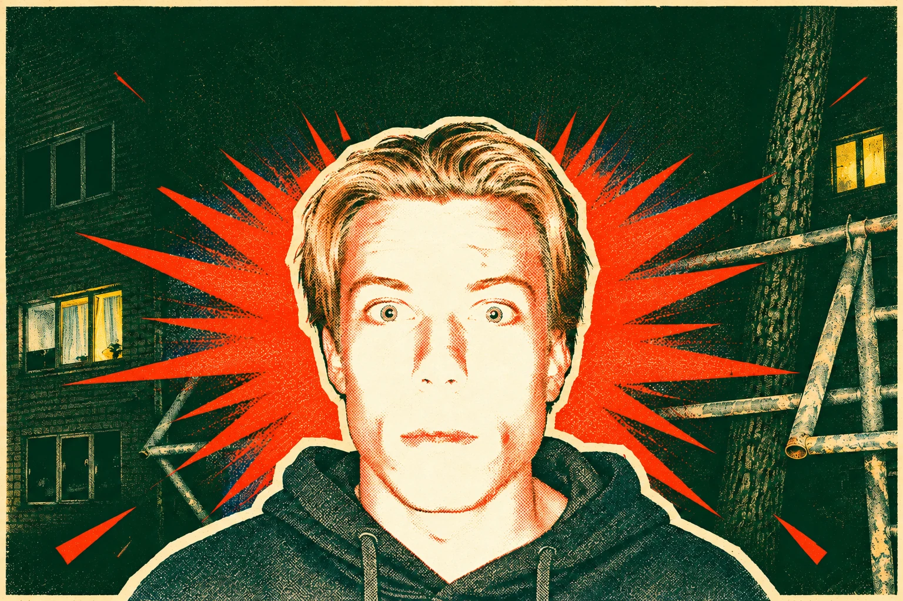

Пусть впереди будет много хорошего. И пусть самое интересное ещё только начинается.

Желаю тебе встреч, после которых хочется строить планы, дел, от которых горят глаза, и вечеров, когда можно выдохнуть и подумать: хороший был день.
Пожеланий 64